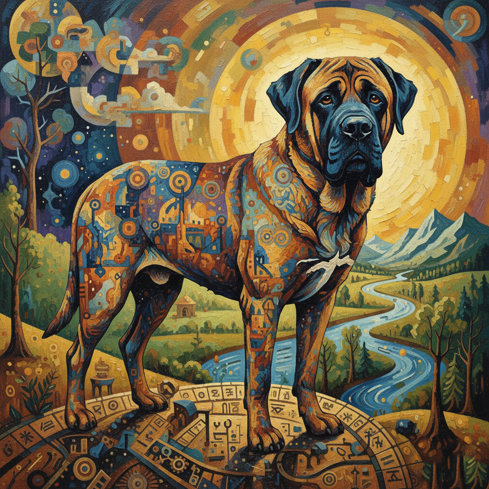
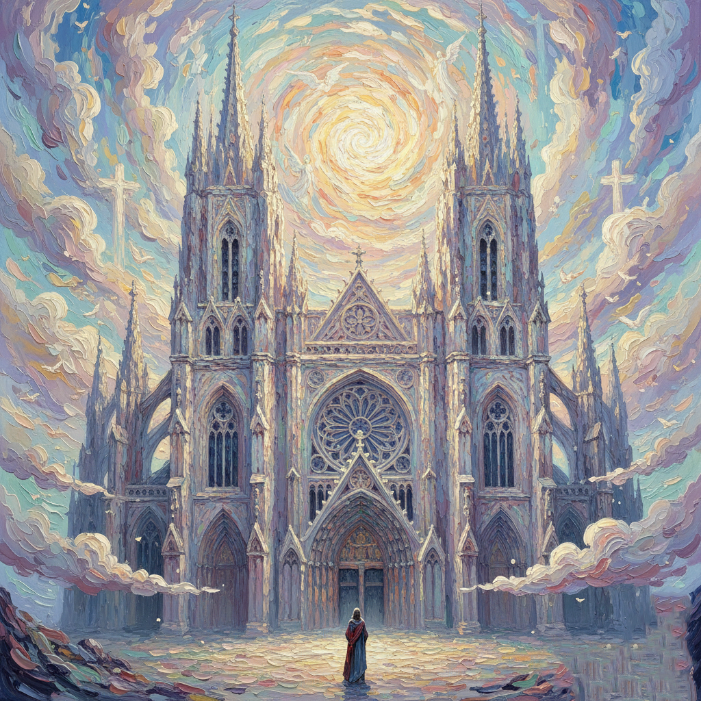
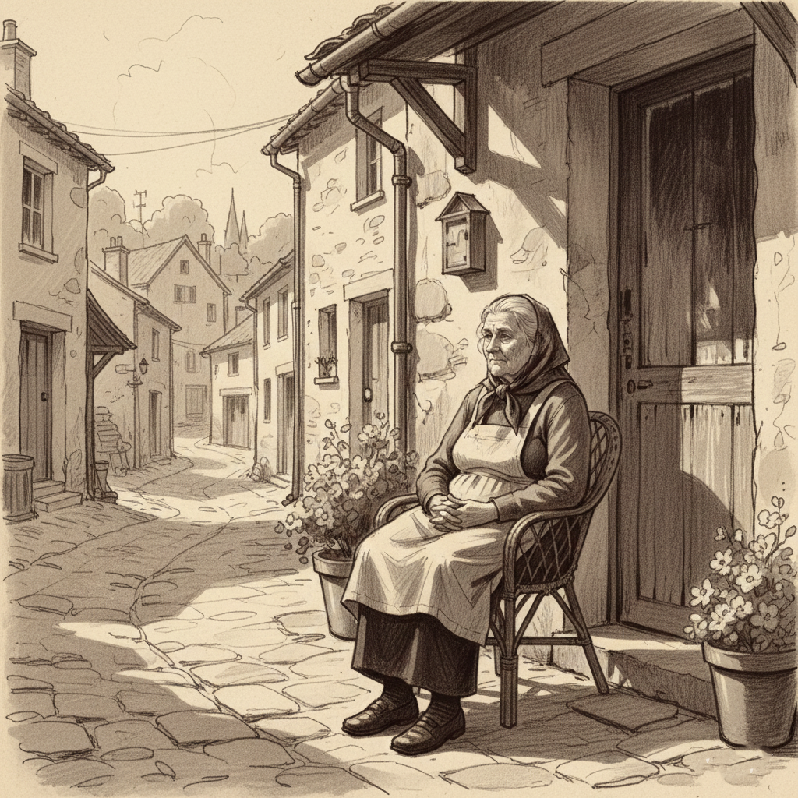
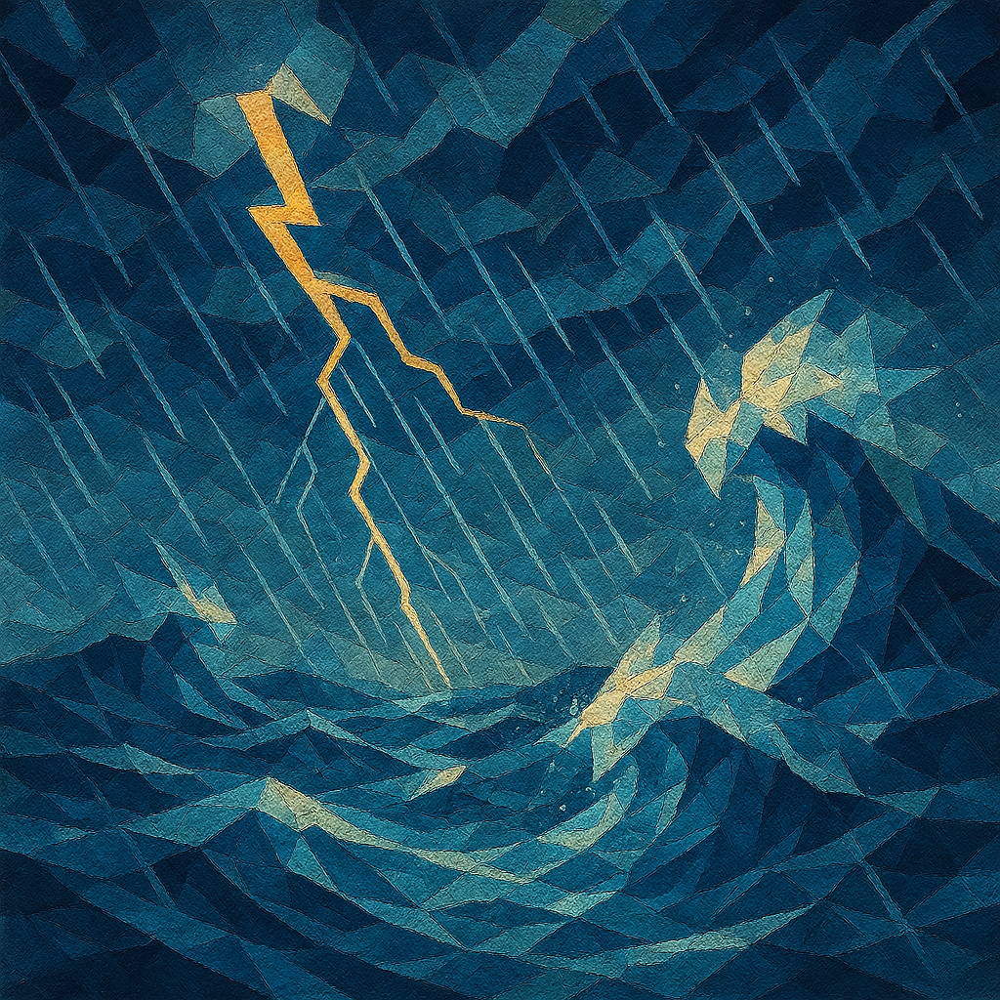
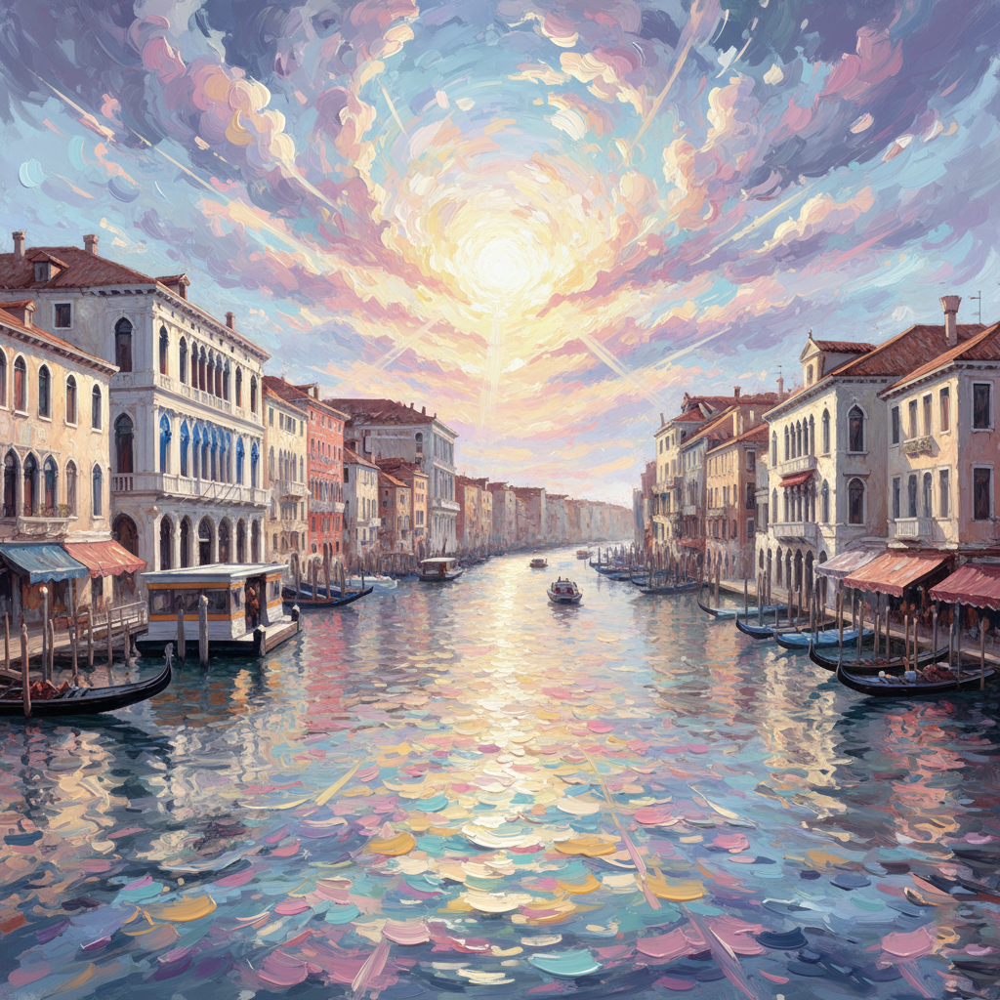

Flotando como un colibri
El colibrí se descompone en un prisma de mil facetas, capturando el latido frenético de sus alas contra un firmamento de fuego geométrico.
Portfolio de Artista
Eduardo Ramírez de Cartagena
2026 Collection Selection
¿Cómo sueña la tecnología cuando es guiada por la mano humana?
Como artista visual, utilizo la Inteligencia Artificial no como un generador automático, sino como un pincel complejo y sofisticado. Cada pieza en el "Universo EDUSSE" comienza con una visión personal —un recuerdo, una emoción o un imposible arquitectónico— que moldeo meticulosamente a través de iteraciones digitales hasta alcanzar la imagen exacta que vive en mi mente.
Mi trabajo invita al espectador a ventanas de realidades alternativas: ciudades neofuturistas, naturalezas reinventadas y figuras atemporales. No busco replicar la realidad, sino expandirla.
EXP NEOCIRC
Estilo pictórico narrativo y envolvente basado en la energía circular, la pincelada expresiva y la
emoción visual.
Rasgos: Composición circular, pincelada suelta y color saturado. Puertos, barcos,
pueblos.
Función: Aporta la vertiente más luminosa, narrativa y emocional.
CUBESSE
El rostro cubista de EDUSSE. Construcción pictórica basada en geometría facetada y presencia
sólida.
Rasgos: Geometría angular, planos facetados, pincelada gruesa tipo óleo impasto.
Función: Identidad visual estructural; la figura como materia firme.
BORACARBON
Atmósfera monocroma, trazo contenido y carga emocional suspendida.
Rasgos: Paleta monocroma (grises, sepias), composición silenciosa, textura suave.
Función: Transmite introspección, pausa y memoria.
FRACNEO
Fragmentación pictórica y arquitectura emocional.
Rasgos: Composición densa de bloques superpuestos, color saturado en tensión.
Función: Las figuras vibran al ser fragmentadas; ritmo visual arquitectónico.
OLEOCUBBO
Estructura pictórica facetada, pincelada gruesa y volumen expresivo.
Rasgos: Geometría facetada, pincelada impasto, figura como bloque pictórico.
Función: Aplica geometría visual pura sobre figuras sólidas.

Un mastín de mirada sabia y protectora cuya piel narra historias de paisajes olvidados. La obra captura la lealtad absoluta en un entorno místico, donde el río de la vida fluye eternamente bajo la vigilancia de un sol que parece bendecir cada rincón de su existencia.

• Arquitectura: Es impresionante cómo el estilo NEOCIRC respeta la verticalidad de las torres mientras el cielo se arremolina sobre el rosetón central. Las nubes bajas parecen incienso o vapor espiritual. • Luz: Una luz mística y fría (azules y cremas) que resalta la piedra intrincada de la fachada. • Narrativa: La conexión entre lo humano (la catedral) y lo divino (el cielo en espiral). Una figura solitaria en la puerta da la escala de la magnitud del edificio.
El colibrí se descompone en un prisma de mil facetas, capturando el latido frenético de sus alas contra un firmamento de fuego geométrico.

El eco de los pasos sobre el asfalto mojado resuena en esta pieza, donde la lluvia y la memoria se funden en el suave grano del carboncillo.

La espera silenciosa y la paz de la tarde se graban en la piedra, en un retrato que honra la dignidad del tiempo y la quietud del hogar.

La inmensidad del océano se convierte en espejo del subconsciente, con sus mareas y su calma tensa. En 'Trueno Y La Mar', la técnica realza este concepto con una ejecución precisa.

Góndolas se deslizan por un canal de reflejos, donde los palacios venecianos sueñan en un mar de color cambiante.

Un mundo circular donde la metrópolis gira en torno a un sol central, creando una danza geométrica de barcos, casas y olas.

El rugido del océano convertido en bruma; un mar que azota la memoria con la fuerza de una tormenta de ensueño.

Serenidad milenaria; la vida respira en los tejados curvos y el silencio de las montañas, un refugio donde el tiempo fluye como el agua del arroyo.